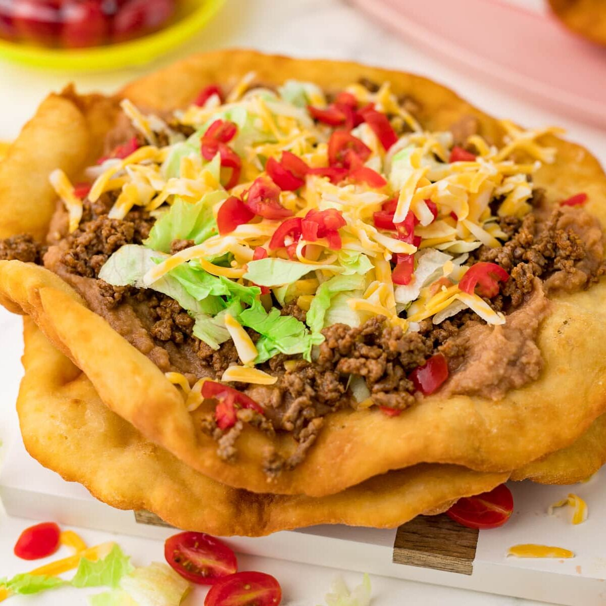
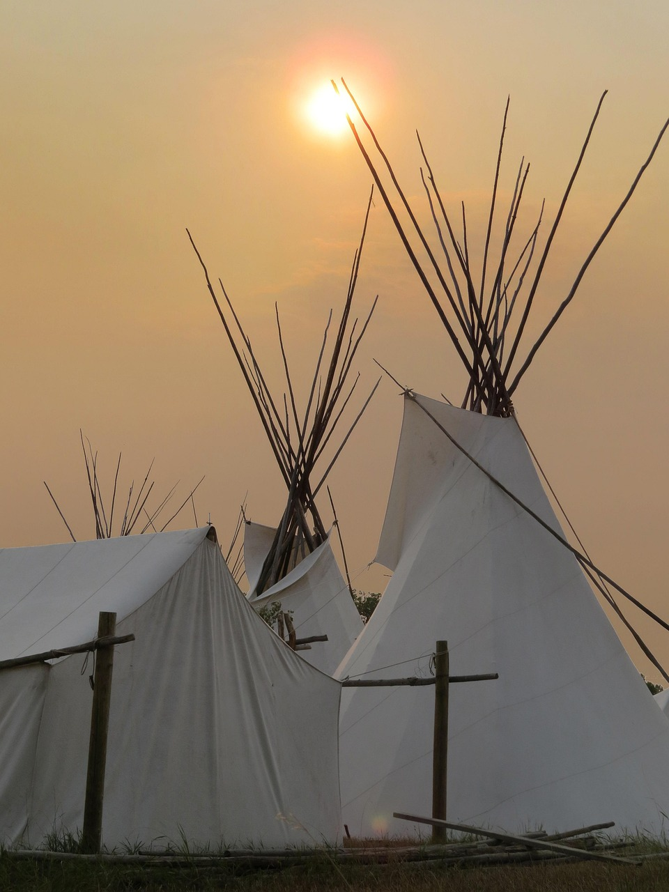
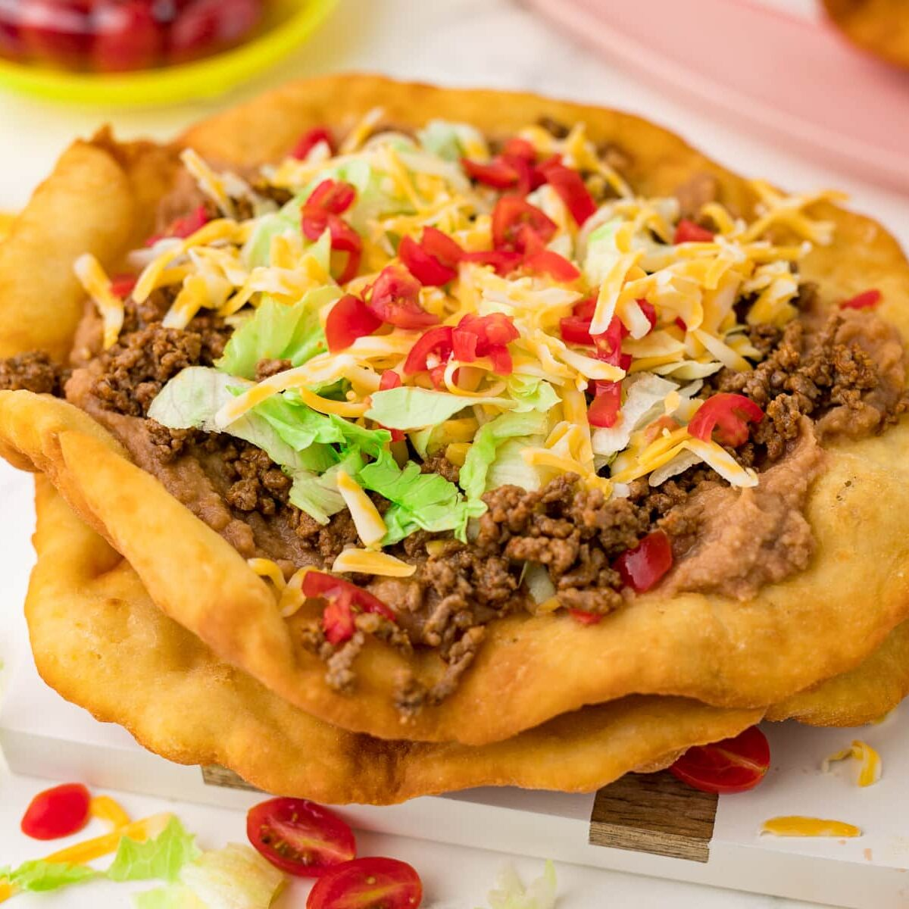
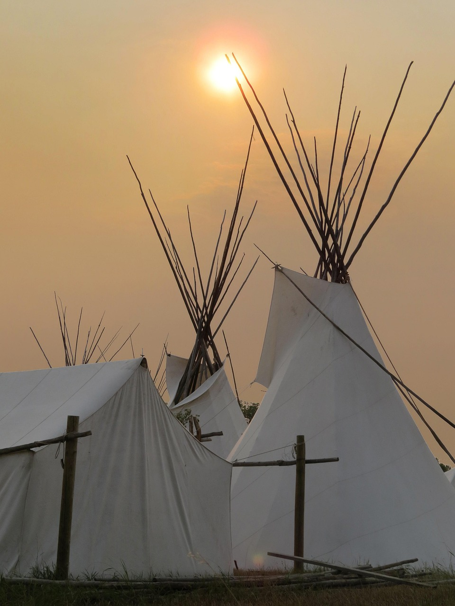

Attractions & Things to Do
Samson Cree Nation offers a variety of activities, cultural experiences, and community events that highlight the spirit of Cree culture. Whether you’re a visitor or a community member, there is always something happening throughout the year. One of the most important attractions is the powwow season, where families gather to enjoy traditional dancing, drumming, and vibrant regalia. These celebrations bring people from across Alberta and beyond.
The community also hosts sports tournaments, community feasts, youth programs, and seasonal gatherings that strengthen cultural identity and bring people together. Outdoor activities such as walking, biking, and exploring the landscape allow visitors to enjoy the natural beauty of the Maskwacis area.
Local artists, beadworkers, and clothing designers often showcase their work through community events or online platforms, offering another way to experience Cree culture. Throughout Samson Cree Nation, you’ll also find murals, cultural buildings, and landmarks that honour the history and identity of the people. Whether you're learning, relaxing, or connecting with the community, Samson Cree Nation provides meaningful and memorable experiences.
 


